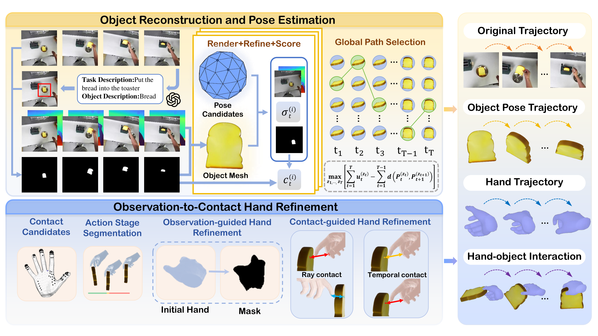

Hand2Robot: Object-Centric 4D Hand Reconstruction from Human Demonstrations for Robotics
* Equal contribution † Corresponding author
Abstract
Human demonstrations can capture task-relevant manipulation without using the target robot, but the recorded hand motions cannot directly serve as robot action supervision. Hand reconstruction and motion retargeting provide a direct route to such supervision, yet recovering hand motion alone does not ensure physically consistent hand-object interactions. To address this issue, we introduce Hand2Robot, an object-centric 4D hand reconstruction framework for robot policy post-training. Given videos of humans performing the target task, Hand2Robot extracts interaction clips, reconstructs object geometry, and generates robot action supervision through hand-object interaction optimization and motion retargeting. For object tracking, we combine observation confidence with temporal motion constraints to select a globally consistent object pose trajectory from per-frame pose candidates. For hand refinement, we use object geometry and motion as a reference and combine staged 2D alignment with object-local contact constraints to refine hand trajectories and finger joint configurations. Experiments on DexYCB and HO3D-v3 show improved object pose accuracy and hand-object interaction quality. Experiments on three real-robot dexterous manipulation tasks further show that reconstructed and retargeted human demonstrations can effectively supplement limited robot data for target-task policy post-training.
Method Overview

Video Presentation
Real-World Experiments
Place Vase
Open Box
Insert Toast
Results
Mean task success rate: 48.3% → 80.0%
Adding 100 human demonstrations processed by Hand2Robot to 20 robot demonstrations per task improves mean success by 31.7 percentage points.
| Training data and method | Place Vase | Open Box | Insert Toast | Mean |
|---|---|---|---|---|
| 20R | 45.0 | 60.0 | 40.0 | 48.3 |
| 20R + 100H, WiLoR | 25.0 | 20.0 | 10.0 | 18.3 |
| 20R + 100H, MagicHOI | 40.0 | 25.0 | 15.0 | 26.7 |
| 20R + 100H, Hand2Robot | 80.0 | 85.0 | 75.0 | 80.0 |
R / H denote the numbers of robot / human demonstrations per task. All mixed-data conditions use the same 20 robot demonstrations and 100 source human videos. Each policy is evaluated in 20 trials per task; the mean is the unweighted average across the three tasks.